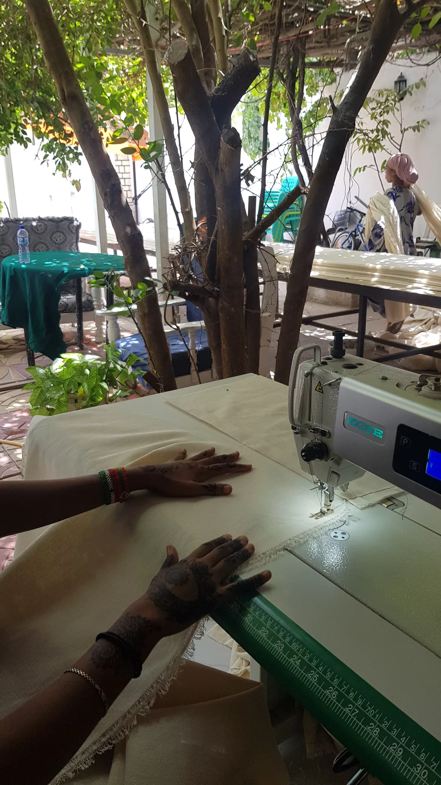

My main research interests are development economics, conflict economics and economics of crime. I am also passioned about replication.
Cocaine production and violence
My job market paper is about cocaine production and violence in Colombia. In my job market paper Throwing gasoline on the cocaine production: the effect of a supply shock on violence I analyze a little-researched topic linking cocaine production and violence in Colombia using data on coca cultivation and homicides. I exploit an exogenous supply shock in smuggled gasoline, an input factor needed to produce cocaine, and analyze the effect on violence in coca-producing areas compared to non-producing areas using a difference-in-differences strategy. The price of trafficked gasoline decreased in 2016 due to an exchange rate shock between Colombia and Venezuela. The impact of the shock is an increase of between 7.76 and 11.69 homicides per 100,000 inhabitants. This paper contributes to the literature by showing that when it becomes cheaper to produce cocaine, there is more violence in production areas. By looking at a purely economic effect on the drug market instead of a drug enforcement effect, the paper also shows that there is an effect of price changes on the cocaine market that goes beyond drug enforcement. You can find the paper here.
Photo by reseacher
Ethnicty identity and discrimination
My second paper is together with Lovise Aalen, Andreas Kotsadam, and Espen Villanger and is called Effects of jobs on ethnic switching – evidence from a field experiment in Ethiopia. Ethnicity is a dynamic construct, with individual-level ethnic switching reported in numerous contexts. Ethnic switching, typically attributed to instrumental or social identity motivations, is hypothesized to be influenced by employment, as it facilitates a shift away from land-based, ethnic dependencies. However, confirming this theory is challenging due to inherent selection biases in employment. Collaborating with 27 firms across five Ethiopian regions, we randomized job offers to women. Utilizing longitudinal data spanning five years, we discovered that formal employment causally provokes a remarkable 183 percent surge in ethnic switching. In-depth qualitative interviews in the two regions with the highest incidence of switching show that instrumental factors, particularly fear during work commutes, appear to be a pivotal mechanism.
Photo by reseacher
In my third paper, Interpersonal and ethnic bias in Ethiopia I study how 1200 women and their husbands from across Ethiopia discriminate based on ethnicity. Two randomized vignette experiments were conducted to test ethnic bias toward politicians and a local villager. I find that the women and their partners have a significant ethnic bias against politicians of another ethnicity. However, the women do not have any ethnic bias against the villager. Surprisingly, their partners show strong ethnic bias against the villager from a different ethnic group. I contribute to the literature on ethnic bias and discrimination by showing that discrimination against ethnicity can vary depending on the situation. Further, I show that in the period leading up to the current civil war, women did not discriminate against other women in their area. Lastly, I contribute to the literature by showing that men might discriminate more than women, even when controlling for men and women living together, and thus assumed to have more similar attitudes.
Photo by reseacher
Military drones and radicalization in an African context
Military drones are becoming an increasingly used method of bombing across the world. It is widely used against terrorism cells in the Middle East and Africa. I use the geocoded Afrobarometer dataset to examine the effects of bombings on civilians’ attitudes close to affected areas by combining the geocoded dataset from the Afrobarometer with the Armed Conflict Location & Event Data Project (ACLED). Within the topic of bombing and attitudes, I focus on air/drone attacks since they have become increasingly used. The drone attacks will be related to civilians’ attitudes towards the local and central government and trust and sympathy with terrorist groups. I use a quasi-experimental regression discontinuity (RD) analysis to compare areas before and after bombing that were close to an attack. This method would be well suited as it overcomes the endogeneity issue. My preliminary findings show that strikes can adversely affect trust and perceived threat by terror organizations.
Replication Project
Together with Erik Ø. Sørensen we have written a replication report as part of a meta study by The Institute for Replication (I4R). The paper replicicated is called Checking and Sharing Alt-Facts. Henry et al (2022) examine whether people are willing to share "alternative facts" espoused by right-wing populist parties before the 2019 European elections in France and how this interacted with the availability of fact-checking information. They find that both imposed and voluntary fact-checking reduce the likelihood of sharing false statements by approximately 45%, and that imposed and voluntary fact-checking have similar effect sizes. We reproduce these findings and introduce several alternative estimates to assess the robustness of the original results, including resolving an inconsistency in the handling of pre-treatment controls. Overall, our results align with the results of the original paper. The differences we find are small in absolute magnitude but, since many effects were small, not always trivial in terms of relative differences. This replication supports the conclusions of the original paper. There report can be found here.